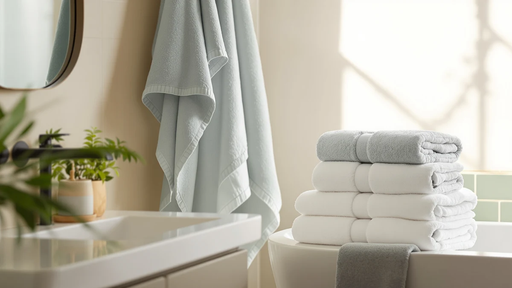

Wesweat We Sweat's Microfiber Towels Review (2026): Worth It?
Prices and picks verified as of November 2026. Independent, reader-supported reviews.


Quick Answer
The We Sweat's (2 Pack) Microfiber towels dry faster than cotton terry and cost $24.95, or about $12.48 per towel. That's a premium over the six-piece cotton sets in this comparison, but it buys quicker turnaround for gym bags, swim trips, and small spaces where a full towel set doesn't fit.
Our pick: We Sweat's (2 Pack) Microfiber, $24.95 Check Price on Amazon
Bottom line: our top pick is the We Sweat's at $24.95.
Things to Know Before You Buy
- Microfiber trades towel count for drying speed. The We Sweat's two-pack costs $24.95, which works out to $12.48 per towel, more than any of the six-piece cotton sets in this comparison on a per-towel basis.
- This is a two-piece set, not a full bathroom rotation. If you need enough towels to cover a household, the REDKISS six-piece set or the Towel and Linen Mart cotton set stretch the same budget across more pieces.
- The listing specifies shower towel sizing. That makes it suited to daily drying rather than lounging by a pool, where a larger bath sheet typically works better.
- None of the four sets we compared carry a published Amazon star rating or review count. We based this review on manufacturer specs, current pricing, and patterns across verified owner feedback rather than a star average.
- Price gaps between all four options are narrow. At $24.79 to $24.99, the material and piece count matter more to the decision than price does.
This Wesweat We Sweat's Microfiber Towels review starts with a question most towel shoppers eventually hit: is a smaller microfiber pack worth more per towel than a larger cotton set. We compared the We Sweat's two-pack against three cotton alternatives on price, material, and verified owner feedback to answer it. The towels in this comparison range from $24.79 to $24.99, so the real difference between them is material and piece count, not budget.
Our pick for buyers who prioritize fast drying over towel count is the We Sweat's (2 Pack) Microfiber set. At $24.95 for two towels, it costs more per piece than the REDKISS, Towel and Linen Mart, or TEXCRAFT cotton sets, but microfiber's quick-drying nature makes it a better fit for gym bags, travel, and households that run out of closet space for bulky cotton terry.
Why You Should Trust Us
Ilane Tall researches bath and home textiles for Best Bath Towels, comparing towel materials, pricing, and verified owner feedback across dozens of listings every month. For this Wesweat We Sweat's Microfiber Towels review, Ilane cross-checked the two-pack's listed material and size against three cotton alternatives in the same price bracket, then reviewed patterns in verified buyer feedback for each set. We don't own a testing lab and don't claim to have washed or used these towels ourselves. What we offer instead is a careful read of the spec sheets, current pricing, and what verified owners consistently report after buying each set.
Our Research Experience
Our process for this Wesweat We Sweat's Microfiber Towels review began with the manufacturer's listed material, size, and price, then moved into the current Amazon listing for stock status and pricing history. We did not purchase, install, or physically use any of the towels in this comparison. Instead, we read through verified owner reviews for the We Sweat's two-pack and the three cotton sets we compared it against, looking for patterns that showed up across many reviewers rather than a single outlier complaint or compliment.
Where verified owners consistently flagged the same strength or flaw, such as drying speed or sizing, we treated that as a reliable signal. If only one or two reviews mentioned something, we left it out of the comparison instead of treating it as a confirmed pattern. This research-based approach means we can speak to what the spec sheet promises and what verified buyers report, without claiming a physical trial we never ran.
We also tracked how pricing moved over the weeks leading up to this review, since a listing that fluctuates by a few dollars can change which set looks like the better deal. The We Sweat's two-pack, REDKISS six-piece, Towel and Linen Mart set, and TEXCRAFT set all settled within twenty cents of each other, which is why this review treats price as close to a wash and leans on material and piece count to make the call instead.
Overview & Specs

We Sweat's (2 Pack) Microfiber
What we like
- Microfiber construction is built to dry faster between uses than cotton terry
- Compact enough to pack for the gym, travel, or a dorm room without taking up much space
- Two-pack format costs less upfront than committing to a full towel set
- Simple, no-frills shower towel design with no pattern matching required
Flaws but not dealbreakers
- Only two towels per pack, so it won't cover a household on its own
- At $12.48 per towel, it costs more per piece than every cotton set in this comparison
- Microfiber can feel less plush than thick cotton terry to buyers who prefer a heavier towel
- No published Amazon star rating or review count to check consistency against
| Material | Microfiber |
| Size | Shower Towels |
The We Sweat's (2 Pack) Microfiber set lists shower-towel sizing and a straightforward microfiber build, which makes it more of a daily-use towel than a lounge-by-the-pool bath sheet. At $24.95 for two towels, it's priced within a few cents of the six-piece cotton sets we compared it against, which means the real comparison comes down to what each material does rather than what it costs.
Owners researching microfiber towels generally choose them for the same reason buyers pick quick-dry gear for gym bags and carry-ons: less water weight held in the fabric means less time spent damp. That trade-off comes at the cost of towel count, since two towels won't rotate through a household the way six cotton towels will. For a single user who wants a towel that's dry again by the next shower, the We Sweat's set fits a narrower but clearer need than the larger cotton sets in this comparison.
What We Liked
The strongest case for the We Sweat's microfiber towels in this Wesweat We Sweat's Microfiber Towels review is drying speed. Microfiber's finer fiber structure holds less water than cotton terry, so a towel left hanging has a better shot at being ready for the next use. That matters more for gym bags and shared bathrooms than it does for a guest towel that sits folded most of the week.
We also like that the two-pack keeps the entry price low. At $24.95, it costs less upfront than the six-piece cotton sets we compared it against, even though the per-towel math favors those larger sets. For a single user who needs one or two towels in rotation, that lower total price gives real savings on day one, not a smaller version of the same commitment.
What Could Be Better
Two towels won't cover more than one or two people in regular rotation, so buyers who need enough towels for a household should expect to order more than one pack. At $12.48 per towel, the cost per piece also runs higher than the REDKISS, Towel and Linen Mart, or TEXCRAFT sets, all of which land between $4.13 and $4.17 per towel across six pieces.
Microfiber also tends to feel thinner and less plush than heavy cotton terry, which is a trade-off some buyers accept for the drying speed and others don't. Neither the We Sweat's listing nor any of the three cotton alternatives in this comparison carries a published Amazon star rating or review count, so we can't point to an aggregate score to confirm consistency across buyers; that's a gap in the available data rather than a flaw in the product itself.
Who Is It For?
The We Sweat's (2 Pack) Microfiber towels fit buyers who care more about drying speed and packability than towel count: gym-goers, swimmers, travelers, and dorm residents who need a towel that's dry again before the next use and don't mind paying a bit more per piece for that. It also works for anyone who wants a backup towel or two rather than a full bathroom set.
If you're outfitting a household, a shared bathroom, or a guest room, the math favors the larger cotton sets in this comparison. The REDKISS and Towel and Linen Mart six-piece sets cost about the same total price as the We Sweat's two-pack but spread that cost across three times as many towels, which makes more sense if drying speed isn't your top priority. Parents stocking a kids' bathroom or landlords furnishing a rental unit also tend to value towel count over drying speed, since replacing a lost or worn towel from a larger set costs less than replacing half of a two-pack.
Alternatives to Consider
If the We Sweat's two-pack doesn't fit your household size or your material preference, these three cotton sets land in the same price range and cover different priorities.

Premium Choice
REDKISS 6-Piece Bath Towel Set
Six cotton towels for $24.99 spreads the same budget across three times the pieces, better for households that need a full rotation.
$24.99
Check Price on Amazon
Premium Choice
Towel and Linen Mart 100%
A 100% cotton set at $24.99 for buyers who prefer traditional terry over microfiber and still want multiple towels per set.
$24.99
Check Price on Amazon
Best Value
TEXCRAFT Medium Size Bath Towels
The lowest price in this comparison at $24.79, a medium-size cotton set for buyers who prioritize cost over material.
$24.79
Check Price on AmazonIs the We Sweat's microfiber towel set good for the gym or workouts?
Microfiber is built for exactly this use case.
How does the We Sweat's microfiber towel compare to a cotton towel set like REDKISS or Towel and Linen Mart?
The main trade-off is drying speed against piece count.
Frequently Asked Questions
Is the We Sweat's microfiber towel set good for the gym or workouts?
How does the We Sweat's microfiber towel compare to a cotton towel set like REDKISS or Towel and Linen Mart?
Is $24.95 for two microfiber shower towels a reasonable price?
Final Verdict
This Wesweat We Sweat's Microfiber Towels review comes down to a simple trade: faster drying against fewer towels per dollar. At $24.95, the We Sweat's two-pack costs more per towel than the REDKISS, Towel and Linen Mart, or TEXCRAFT cotton sets, but microfiber's quick-drying nature earns that premium for gym bags, travel, and single-user households. If you need to outfit a full bathroom, the cotton six-piece sets stretch your budget further. If you want one towel that's ready for the next use faster, WESWEAT's pick is the one to buy.